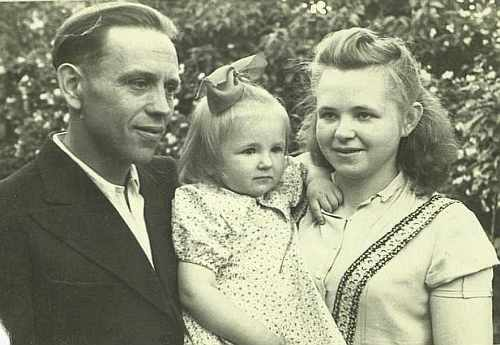

Высоцкая (Свекло) Ирина Антоновна
Родилась в 04.04.1928 в г.Гродно. Была домохозяйкой.
 вместе с мужем Вацлавом и дочерью Эльжбетой
Родители:
Свекло Антон
Свекло София Антоновна
Братья/Сестры:
неизвестны.
Дети:
Эльжбета
;